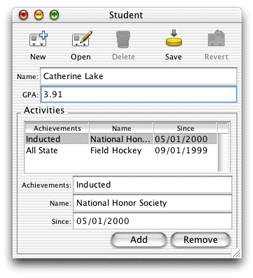

This chapter leads you through the creation of a Java Client application starting with the Direct to Java Client project type. You'll learn how to
You'll create a simple college admissions application with a rich user interface and database access. The application stores records of prospective students, which allows you to track students throughout the admissions process. Figure 3-1 shows a sample student record from this application.
| Note: Projects for the tutorials in this book are available on the WebObjects documentation home page: http://developer.apple.com/techpubs/webobjects/. |
Figure 3-1 Part of the completed application in this chapter
